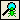

Save Page to .PDF
Save Page to .PDFYou control the Data Tester using menus, buttons, and keyboard shortcuts.
Data Tester Edit Menu
The Edit menu for the Data Tester view includes the following options.
| Menu Option | Action | |
|---|---|---|
| Undo (CTRL+Z) | Undo the last action performed. | |
| New Data | Creates a new data file. | |
| Open Data | Opens the Data File Catalog dialog box. | |
|
| Load Data File | Loads an XML data file directly into Data Tester. |
| Load Session File | Loads a session file from an EXAMPLE Server® into Data Tester. | |
| Save Data | Saves the current data file. | |
| Save Data As | Opens the Data File Catalog Detail dialog box to save the current data file to a new data file. | |
| Data | Manages the record information in the data file. For more information, see Data Tester Data Submenu. | |
| Update | Updates the input after executing the ManuScript. Copy data from output to input. | |
| Execute (F9) | Executes the ManuScript with the current input. | |
| Find (CTRL+F) | Opens the Search dialog box to enter text to find. | |
| Find Next (F3) | Finds the next occurrence of the previously entered text. | |
|  | Find Bug | Finds the position in the Detailed view where a failed calculation has occurred. |
| View Error (CTRL+E) | Displays the error text box generated from a failed calculation. | |
| View Messages (CTRL+M) | Opens the View Messages dialog box allowing you to view messages that were applicable during the execution of the ManuScript. | |
| Generate Debug Info | Generates Results and Detailed View information as well as XML. | |
| Display Profile Information | Displays the times of execution in the Detailed view of the results. | |
| Output Complete Results | Includes private field information in output XML. | |
| Advanced Options | Selects the field to execute in Data Tester. | |

Data Tester Data Submenu
The Data submenu includes the following options.
| Menu Option | Action | |
|---|---|---|
|
| Add Record | Adds a record to the data file. |
| Duplicate Record | Duplicates the selected record in the data file. | |
| Delete Record | Deletes the selected record from the data file. | |

This menu is also available as a shortcut menu from a data record.
Data Tester Toolbar Buttons
The Data Tester toolbar contains the following buttons.
| Button | Name | Action |
|---|---|---|
| Create A New Data File | Creates a new data file. | |
| Open Data File | Opens the Data File Catalog dialog box | |
| Save Data File | Saves the current data file. | |
| Update Data File | Updates input from output fields in the data file after execution. | |
| Execute | Executes the ManuScript with the current input. | |
| Find | Opens the Search dialog box to enter text to find. | |
| Find Next | Finds the next occurrence of the previously entered text. | |
| Find Bug | Finds the position in the Detailed view where a failed calculation has occurred. | |
| Add Data Record | Adds a record to the data file. | |
| Duplicate Data Record | Duplicates the selected record in the data file. | |
| Delete Data Record | Deletes the selected record from the data file. |
Data Tester Keyboard Shortcuts
Use the following keys to control the Data Tester view.
| Key Combination | Action |
|---|---|
| F3 | Finds the next occurrence of the previously entered text. |
| F9 | Executes the ManuScript with the current input. |
| CTRL+D | Opens the Advanced Options menu. |
| CTRL+E | Displays the error text box generated from a failed calculation. |
| CTRL+F | Opens the Search dialog box to enter text to find. |
| CTRL+M | Opens the View Messages dialog box allowing you to view messages that were applicable during the execution of the ManuScript. |
Double-click a field name to go to the field in the Fields view.
Expanding and Collapsing Trees
To expand and collapse trees:
- Double-click a field to collapse all the trees below the selected field.
- Double-click the field again to expand all the trees below the selected field.
You can also:
• Click Expand or Collapse to the left of the field.
• Right-click the field, and then click Collapse/Expand Tree.